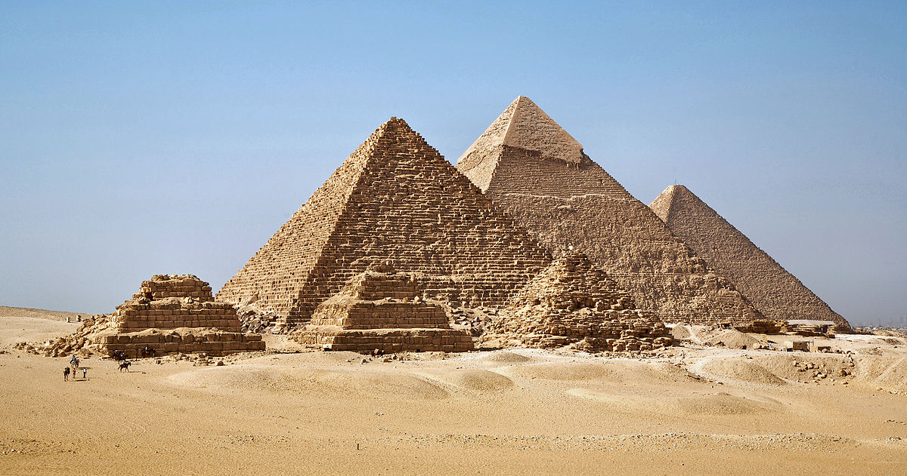

Egito |
|
O Egito é um país do nordeste da África, numa região predominantemente desértica, que inclui também a península do Sinai, na Ásia, o que o torna um Estado transcontinental. Com uma área de cerca de 1 001 450 km 2, o Egito limita-se a oeste com a Líbia, a sul com o Sudão e a leste com a Faixa de Gaza e Israel. O litoral norte é banhado pelo mar Mediterrâneo e o litoral oriental pelo mar Vermelho. A península do Sinai é banhada pelos golfos de Suez e de Acaba. A sua capital é a cidade do Cairo, a maior e mais populosa cidade do país e do continente africano. Os gentílicos para o país são "egípcio", "egipciano", "egipcíaco","egiptano", "egiptanense", "egipcião", "egíptico" e "egiptino", embora as últimas sete formas raramente sejam usadas. Com mais de 85 milhões de habitantes, o Egito é um dos países mais populosos da África e do Oriente Médio, sendo o 15.º mais populoso do mundo. A população está concentrada, sobretudo, às margens dorio Nilo, praticamente a única área não desértica do país, com cerca de 40 000 kmª; O da Líbia, a oeste, o Arábico ou Oriental, a leste, ambos parte do Saara, e o do Sinai, são pouco povoados. Cerca de metade da população egípcia vive nos centros urbanos, em especial no Cairo, em Alexandria e nas outras grandes cidades do delta do Nilo, de maior densidade demográfica. O país possui uma das histórias mais longas entre todos os Estados modernos, tendo sido continuamente habitado desde o 10.º milênio a.C.,[10] Sua antiga civilização foi responsável pela construção de alguns dos monumentos mais famosos da humanidade, como aspirâmides de Gizé e a Grande Esfinge, tendo sido também uma das mais poderosas de seu tempo e uma das primeiras seis civilizações a surgir de forma independente no mundo. Suas ruínas antigas, como as de Mênfis, Tebas, bem como o templo de Karnak e o Vale dos Reis, abrigados na cidade de Luxor, são um foco importante de estudo arqueológico e interesse popular de todo o mundo. O rico legado cultural do Egito, bem como suas atrações, como o mar Vermelho e os sítios arqueológicos, fizeram do turismo a parte vital da economia, empregando cerca de 12% da força de trabalho no país. A economia egípcia é uma das mais diversificadas na África, com setores como o turismo, a agricultura, indústria e serviços em níveis de produção quase iguais. O Egito é considerado uma potência média, com influência cultural, política e militar significativa no Norte da África, no Oriente Médio e no mundo muçulmano.
 |